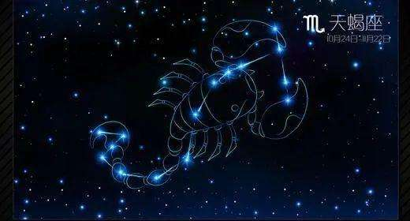
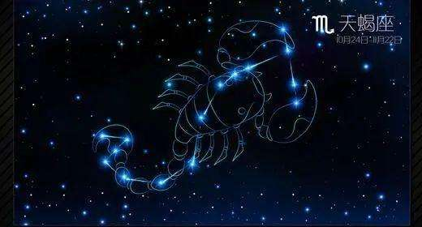

关于我
俞智鑫，英文名字-Dennis.天蝎男，出生于赤道小红点新加坡，从小在北京读书.比较喜欢看足球，最喜欢的球星是梅西，主队是巴黎圣日尔曼（以前是巴萨）。然后比较喜欢打游戏（实况足球）
个人爱好：读书、运动、旅游、音乐、游戏
座右铭：学而不思则罔，思而不学则殆
邮箱：yuzhixin2024@i.pkuschool.edu.cn


俞智鑫，英文名字-Dennis.天蝎男，出生于赤道小红点新加坡，从小在北京读书.比较喜欢看足球，最喜欢的球星是梅西，主队是巴黎圣日尔曼（以前是巴萨）。然后比较喜欢打游戏（实况足球）
个人爱好：读书、运动、旅游、音乐、游戏
座右铭：学而不思则罔，思而不学则殆
邮箱：yuzhixin2024@i.pkuschool.edu.cn
